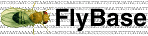
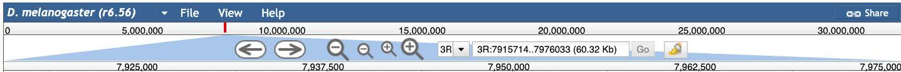
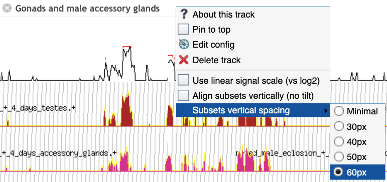
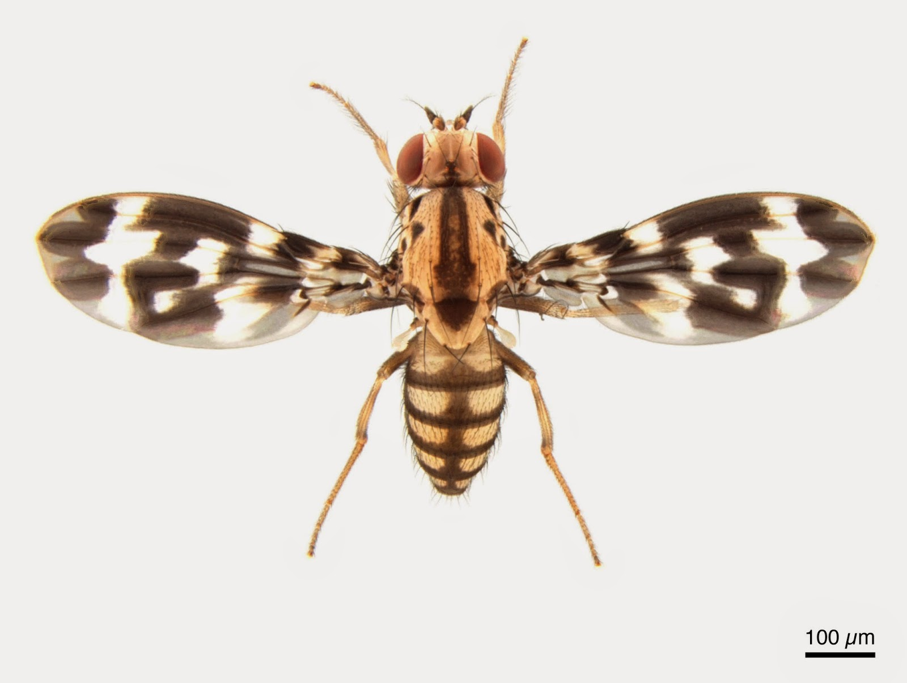
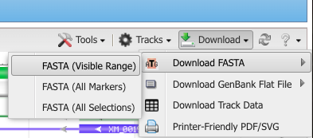
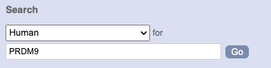
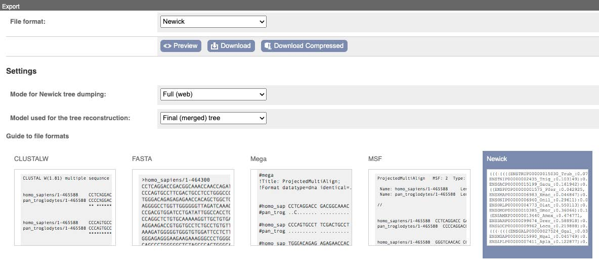

17 Lab03: Genome Browsers and Databases
17.1 Using the Jump-2-gene (J2G) feature on FlyBase

- Go to the Drosophila Organismal Genomic Database “FlyBase” and search for the DSX gene using the search box in the top-right corner.
Which chromosome is this gene on? Hint: In the right hand panel, you can jump between sections. Here you want to find the “Genomic Location”.
What do you think the “R” in the chromosome name means?
In the section Genomic Location use the button to view “DSX” in the genome browser.
On the left, turn on the RNA and CDS tracks:

Once you configure the browser, answer the following questions:
- How many different transcripts does this gene have?
- How many exons are in each protein?
- What strand of DNA is it on? (Hint: Right click on features to get details.)
Click on one of the protein isoforms and identify which protein domains are present. Note: There are several options, so just pick one. The goal of this assignment is to explore.
Scroll down to Transcript Level Features and turn on these tracks, clicking the
?for each to read about the evidence:- TSS (modENCODE, embryo)
- RNA-Seq exon junctions
- What evidence has been used to confirm the different genetic features of this gene?
View these evidence tracks in the genome browser and hover over features to see read counts, then answer:
- How many genomic “reads” support each prediction?
- TSS (modENCODE, embryo)
- RNA-Seq exon junctions
In the Expression section under RNA-Seq → Tissues, turn on expression for Gonads and male accessory glands.

- Configure and maximize vertical spacing as in the image above, then examine the expression data. What predictions do you make about this gene?
17.2 2. Compare orthologous sequences using two-way BLAST at NCBI
- In the NCBI Gene database, find the ADH gene in Drosophila grimshawi. Hint: On the main NCBI page, use the dropdown menu to select the “Gene” database. Then search for the specific gene and species.

From the gene page, what is the Gene Symbol? What is the gene ID?
From the gene page, scroll down to the Genome Data Viewer button, and click it. From the download button, hover over “Download FASTA” and click the “FASTA (visible range)” option. This will download the ADH gene region for D. grimshawi.

Repeat the previous steps to download the gene sequence for ADH for D. melanogaster. For this species, you will notice there are multiple results from this gene. Select the one with the gene symbol “Adh”.
Go to blast2seq and:
- Paste D. melanogaster ADH into the Query.
- Paste D. grimshawi ADH into the Subject.
- Under Program Selection, choose blastn for somewhat similar sequences.
- Click the button.
From the BLAST Results Page, record the following information:
Blast result features Recorded Results Query length Subject length Percent identity between the two species Percent query cover E value Total score Under the Alignments tab, find the alignment with the highest percent identity and record:
Alignment information Recorded Results Number of matches (Identities) Number of Gaps Orientation (Strand) Now select the Dot Plot tab and describe:
- How do your calculations above compare to the visual of hits in the dot plot?
In a new tab, return to FlyBase. At the top, under Tools, hover over “Search/Browse Portals”, and select Sequenced Species. Explore the page and answer the following questions:
- Based on the tree, when did D. melanogaster and D. grimshawi last share a common ancestor?
- Based on your inferred evolutionary divergence time between D. melanogaster and D. grimshawi, does the observed percent identity from your previous BLAST search make sense?
Predict whether you expect a higher or lower percent difference between D. pseudoobscura and D. melanogaster.
- If time permits, test this by repeating the two-way BLAST with ADH from D. pseudoobscura as the subject and D. melanogaster as the query.
17.3 3. Compare synteny among Muller Elements
On FlyBase, under the Tools tab, hover over Genomics Tools and select Synteny Table. Drosophila chromosomes are labeled as Muller’s Elements, and comparative genomics across Drosophila species has been studied since the 1930s using polytene chromosome squashes.
Answer the following:
What are the major changes at the chromosome level across these Drosophila species? Specifically, do any species have pieces of multiple Muller elements spanning a single chromosome?
Compare the below (Adapted and updated based on Figure 3 in1) to the synteny table and mark where Muller elements have shuffled to form a combined element.

- What other kinds of changes can you find?
17.4 4. Whole genome alignments on UCSC
Go to the UCSC Genome Browser and select the D. melanogaster genome. At the top left, in the “Popular Species” region, click the button that says “Fruitfly”.
After selecting the “dm6” assembly, in the “Position/Search Term” field, search for the rdl gene and select the transcript variant A , then zoom out 3×.
Under Comparative Genomics, click Conservation and:
Turn on MultiZ Alignment for these three Drosophila species:
- D. simulans
- D. pseudoobscura
- D. grimshawi
Under Others, select all available options.
Under Subtracks, select all and display them as dense.
Set the MultiZ track to full.
Click Submit to return to the genome viewer.
Do the different conservation tracks (phyloP, phastCons, Cons Elements, and MultiZ Align) agree with each other?
Underneath the Cons Elements track, examine the individual alignments for D. melanogaster and the other Drosphila species previously selected.
- Do these tracks confirm what you saw in Part 2 with the pairwise alignment between D. grimshawi and D. pseudoobscura based on the species relationships on FlyBase?
- Would you guess D. simulans is more closely related to D. melanogaster than D. pseudoobscura or more distantly related? Return to the species tree in FlyBase to confirm.
Repeat the setup for the DSX gene (you can type DSX in the top search panel and click go; your configuration should persist) and answer:
- Do the different conservation tracks still agree for this gene?
- Why might different genes show different degrees of conservation?
17.5 5. Orthologs, paralogues, and gene trees on Ensembl
Go to the Ensembl genome browser and select the Human genome from the species drop-down menu.
In the search bar, type PRDM9 and click Go.

From the gene page, select Orthologues under the Comparative Genomics section in the left-hand panel.
Answer:
- How many orthologues are predicted for this gene in Primates?
- How many are predicted for Sauropsida? Which species?
- Note the Target %id and Query %id for these orthologues.
Compare the counts of 1:1 orthologues versus 1:many orthologues.
- What do you think the “many” indicate biologically?
Set Species set to All, then in the left-hand panel choose Gene tree.
- Select Tetrapods on the gene tree, then click View sub-tree using the Wasabi viewer.
- What do you notice about these gene sequences?
- Is this a protein sequence alignment or a DNA sequence alignment?
- Along the top, click Export and:
- Make sure ALL species are included.
- Download the tree as a Newick file.

(Optional) Open the Newick file in FigTree:
- Explore settings to configure your tree (e.g., change tip names via the annotate feature, collapse groups).
- When satisfied, export the tree as a PDF.
17.6 Reflection Questions
What challenges did you encounter while navigating the different genome databases, and how did you overcome them?
How did the different genome browsers compare in terms of ease of use and the type of information available?
What new insights did you gain about genome structure and evolution by using these tools?
When exploring the gene annotation tracks, how does the evidence from each track support your existing knowledge of how the gene functions?
How does the percent identity in your BLAST search reflect evolutionary relationships between species, and how did this compare to the conservation tracks in UCSC?
How do synteny comparisons help infer evolutionary history?
Were you surprised by the number of orthologs and paralogs across different vertebrate groups for PRDM9? Do you think the accuracy of these counts differs across clades?